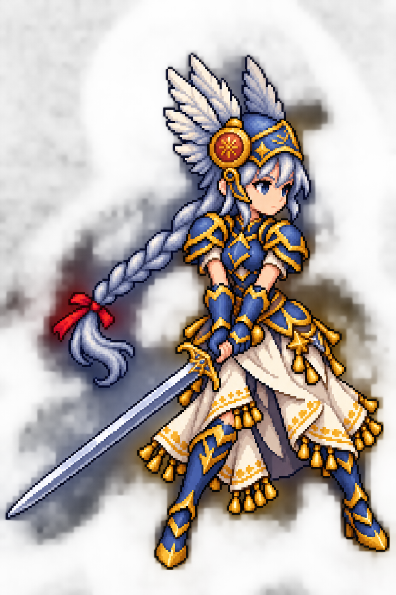

원안의 얼굴·갑옷·무기 형태를 유지합니다.
현재 대기 0·1번과 무기 전환
완료 자세 14·15번을 비교합니다. 새로운 호흡·머리카락 프레임을 만든 것은 아닙니다. 활
A안(1.8초 주기)은 게임에 적용했습니다. B안은 비교용으로만 남겼습니다. 손의 붉은 윤곽은
별도로 교정했으며 자세와 형태는 유지했습니다.
발 기준과 배율은 고정합니다. 이미지 늘이기·흔들기·투명도 혼합 없이 프레임만 전환합니다. 좁은 화면에서는 캔버스가 화면 너비에 맞춰 축소됩니다.
0·1은 기존 대기, 14·15는 활을 내린 무기 전환 완료 자세입니다. 손과 활의 접점, 머리 크기, 발 위치가 연결되는지 확인하는 후보입니다. 새로운 자세를 그리지 않으므로 생동감의 증가에는 한계가 있습니다.
94% 일괄 축소안은 채택하지 않습니다. 검과 몸이 한 이미지에 포함되어 있어 전체 축소는 검도 정확히 6% 줄입니다. 현재 6개 공격 프레임과 렌더 배율을 그대로 보존합니다.
공중 공격 6–11번을 모두 100%로 비교합니다. 기존 패킹은 가장 아래 실루엣을 기준선에 맞춥니다. 후반 자세에서는 검 끝이 그 기준이 될 수 있어, 키뿐 아니라 등록 위치가 달라져 보일 수 있습니다. 위치 정렬만으로는 얼굴·몸통 비율 차이를 고칠 수 없습니다.
후속 보정이 필요하면 검날·손잡이·손의 접점을 고정한 별도 자세 작업과 검 길이 측정이 필요합니다. 현재 원안을 훼손하지 않고 몸만 줄일 수 있다고 판단하지 않았으며, 분리·재조립이나 비균일 변형은 적용하지 않았습니다.
이전 크기 점검 열기 — 칼 대기 연결안은 게임에 적용됨